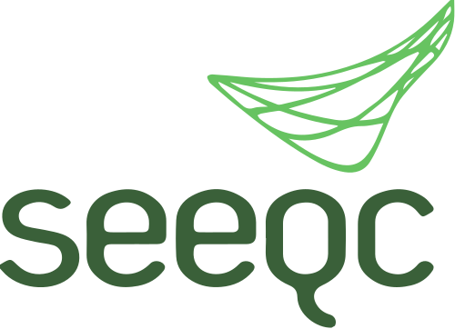
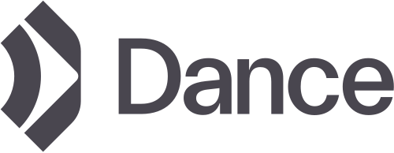
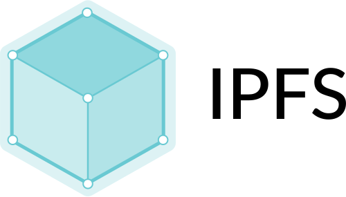
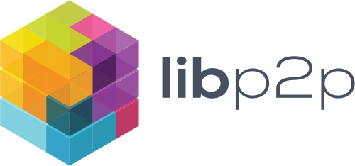

Updates
Twitter
Jobs
BlueYard invests in founders with transforming ideas that decentralize markets and empower humanity.
What if nature was our most powerful technology?


What if we could reinvent the internet for permissionless innovation?


What if we could untangle software monopolies and liberate data?
What if we could enable the separation of state and money?